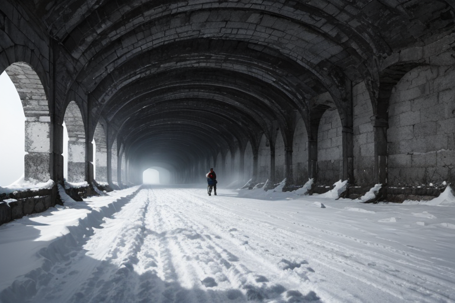
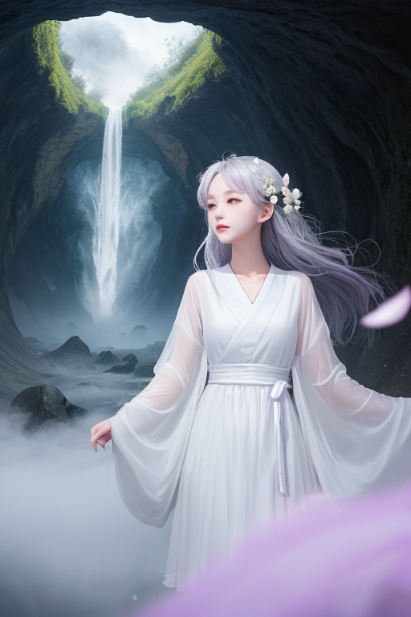
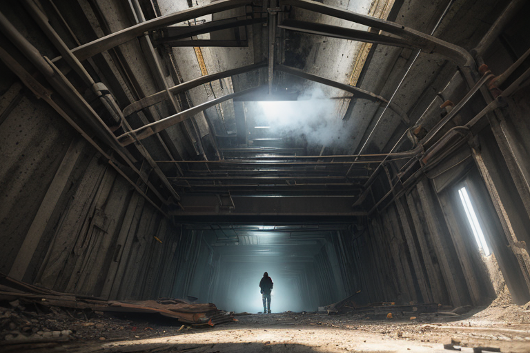
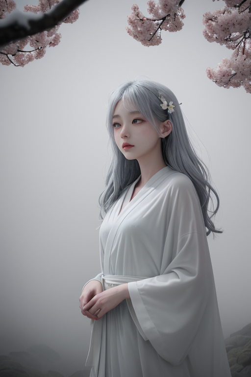
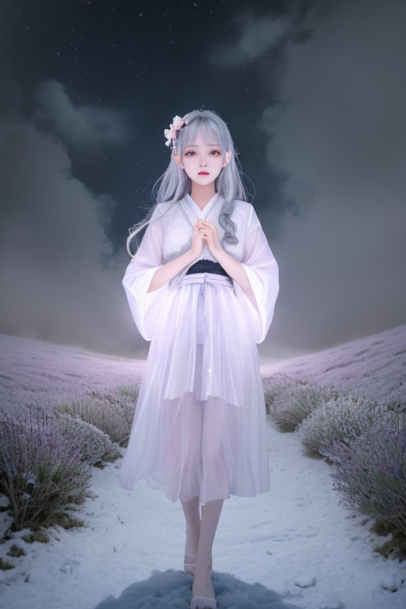

第一章 現実の青森
あなたはまだ気づいていない。この土地にも、王がいることを。
青函トンネルが開通した一九八八年、津軽海峡の底で何かが終わった。船での長い連絡は過去のものとなり、本州と北海道は鉄路で直結された。人々は「終わり」を祝い、新しい「始まり」を謳った。しかし、海底五十三キロの暗闇の中、地殻が微かに軋む音は、誰にも聞こえなかった。歪みは消えない。列島の重みは、この北の岬で静かに蓄積され続けている。
弘前城の石垣は、春には桜に埋もれ、冬には深い雪に覆われる。何度も修復を繰り返したその姿は、終わりと再生の繰り返しそのものだ。城の天守が失われたのは火災という「終わり」だったが、現在の姿は、人々が「再生」を選んだ結果である。りんご畑が広がる津軽平野を、地吹雪が白く塗りつぶす時、全ての輪郭は失われる。それは破壊なのか、それとも、新たに描き直されるための空白なのか。
この土地には、終わりを日常として生きる知恵がある。

第二章 歪みの兆候
青函トンネルが開通した一九八八年、本州と北海道は物理的に繋がった。人と物資の流れは加速し、津軽海峡の海流さえ、わずかにそのリズムを変えた。アオモリア・レヴナントは、その巨大な構造物が地層に刻んだ新たな「歪み」を感知していた。トンネルは便利という「生」をもたらしたが、同時に、海峡が持っていた古い均衡という「終わり」も招いていた。
その歪みは、時を経て微細な振動として現れる。十和田湖の水面に、理由なくさざ波が立つ時。奥入瀬渓流の滝音が、一瞬、不自然に途切れる時。それは、過去の分断と現在の接続が、地の底でせめぎ合う痕跡だった。
王は、林檎の樹が冬の寒さに耐えて春に蕾を出すように、ただその歪みを見守り、必要最小限の調整を加える。大災害を防ぐためではなく、その土地が持つ「終わりと再生」の自然な循環が、人為的な速度に飲み込まれないように。終わりを否定せず、しかし、再生の芽を踏み潰さないように。霧の妖精ネブラが王の背後からそっと囁く。「この変化も、いつかはこの土地の記憶となるのです」と。
地吹雪が全てを白一色に帰すように、時には、一度リセットされることが次の始まりに必要だ。問題は、それが破壊なのか、準備なのか、見極める者がいないことだった。

第三章 王の葛藤
青函トンネルの最深部。巨大な機械の唸りが岩盤を震わせ、本州と北海道を繋ぐ鉄の血管が脈打つ。アオモリア・レヴナントは、冷たいコンクリート壁に手を触れていた。ここは、かつて津軽海峡が隔てた「終わり」を、技術力で「通過可能」に変えた場所だ。変革そのものの象徴である。
「加速は、時に再生を歪めます」
ネブラの声が、機械音をすり抜けて届く。彼女の霧が、トンネル壁に過去の記憶を映し出す。工事中の殉職者。完成の歓喜。そして、海峡を渡る手段が変わり、消えゆく古い航路の寂寥感。全ては連続している。破壊と創造は表裏一体だった。
王は目を閉じた。自身の役割は「調整」だ。変革を止めることではない。しかし、この加速度的な変化が、津軽の持つ「終わりを受け入れ、そこから再生する」という深遠なリズムを破壊しないか。林檎が実り、落ち、土に還り、また芽吹くように。地吹雪が全てを覆い、春に溶けるように。
「止めよか」
彼は呟いた。変革線の使命は、歴史の流れを後押しすることだ。だが、彼の中に芽生えた「静かな希望」は、別の声で囁く。急ぎすぎる終わりは、真の再生を妨げると。彼の決断は、この地の未来の「質」を左右する。

第四章 妖精との対話
恐山の冷たい霧が、イタコの問いかけのように立ち込めていた。王の傍らで、ネブラの輪郭がゆらめく。
「あなたは迷っていますね、我が王」ネブラの声は、記憶そのもののように静かで深い。「変革線の使命は、終わりを恐れず、歴史の扉を押し開くこと。青函トンネルが海底を貫いた時、確かに古い海の隔たりは終わりを告げました。しかし、それは同時に、新しい人の流れと、新しい終わりの始まりでもあった」
霧の中に、林檎の花が散り、実がなり、雪に埋もれる映像が浮かび上がる。ネブリナが、その循環を静かに示している。
「急ぐ終わりは、腐敗を早めるだけです」ネブラは続けた。「しかし、訪れるべき時に訪れぬ終わりは、再生そのものを腐らせます。この地は、津軽藩の歴史を通じて、幾度もそれを学んできました。終わりは、決して無ではありえない。それは、次の何かが息づくための、静かなる胎内なのです」
王は、霧の向こうに広がる津軽平野を見つめた。

第五章 微調整と余韻
一九八八年三月十三日、青函トンネル開通の日。地吹雪が津軽海峡を覆う中、王は恐山の霊場に立っていた。トンネルは、この地の物理的な「終わり」を「始まり」へと変える巨大な事業だった。その歴史の瞬間、地殻には巨大な歪みが蓄積されていた。通常の微調整を超える規模の、破局的なズレ。放置すれば、祝賀の列車を飲み込む大規模な地盤沈下が起きる。
王は、レギス・アストラから許された「一度だけの大調整」を使うことを選んだ。代償は、自身の存在の大半を「終わらせる」こと。彼は静かに腕を広げた。深紅の紋章が輝き、霧と林檎の輪が地中へと溶け込んでいく。地殻の軋みが、かすかに、しかし確実に方向を変えた。列車は無事に海峡を渡った。
王の姿は薄れ、ほとんど霧のようになった。ネブラがその背後からそっと抱きしめる。彼女の涙が霧に滲む。「あなたの終わりは、無ではありません」。残された微かな存在は、これからも、訪れるべき終わりと、芽吹くべき再生とを、静かに見守り続けるだろう。
終わりは、次の何かが息づくための、静かなる胎内なのだから。
あなたの町にも、王がいる。